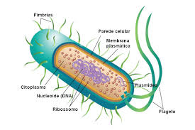

Bacteriófagos Os bacteriófagos são vírus que infectam bactérias para
reproduzir-se. Como eles infectam apenas bactérias, podem ser utilizados
no tratamento de bacterioses. Bacteriófagos, também chamados de fagos,
são vírus que apresentam a capacidade de infectar bactérias, as quais
são utilizadas para o processo de replicação viral. O termo vem do grego
e significa “comedor de bactérias”. Assim como todos os outros vírus, os
bacteriófagos não possuem células e são parasitas intracelulares
obrigatórios, uma vez que não possuem metabolismo próprio e precisam da
célula hospedeira para reproduzir-se. Os bacteriófagos são encontrados
em diferentes locais na natureza e não são responsáveis por causar danos
à saúde dos seres humanos. Por parasitarem bactérias, os bacteriófagos
atuam nesses locais controlando as populações bacterianas.
Características dos bacteriófagos Grande parte dos bacteriófagos
apresenta DNA como material genético, mas existem tipos que apresentam
RNA. Os bacteriófagos com DNA apresentam geralmente os seguintes
componentes: cabeça, cauda e fibras da cauda. A cabeça é o local onde
está o material genético, e a cauda e as fibras da cauda estão
relacionadas com a penetração do material genético na célula hospedeira.
Os bacteriófagos podem infectar diferentes bactérias, mas existem tipos
muito específicos que são capazes de infectar apenas um tipo determinado
de bactéria.

Bactéria
As bactérias são organismos microscópicos unicelulares. Elas estão entre
as formas de vida mais primitivas da terra. Há milhares de tipos
diferentes de bactérias, e elas vivem em todos os ambientes concebíveis em
todo o mundo. Elas vivem no solo, na água do mar e nas profundezas da
crosta da Terra. Há relato de que algumas bactérias vivem até em dejetos
radioativos. Muitas bactérias vivem sobre e dentro do corpo das pessoas e
dos animais, sobre a pele, nas vias respiratórias, na boca e nos tratos
digestivo, reprodutivo e urinário, sem causar nenhum dano. Essas bactérias
são denominadas flora habitual ou o microbioma. O número de bactérias em
nossa microbiota é, no mínimo, igual ao número de células no organismo.
Muitas floras habituais são efetivamente úteis para as pessoas
ajudando-as, por exemplo, a digerir alimentos ou prevenindo o crescimento
de outras bactérias mais perigosas. Apenas alguns tipos de bactérias
causam doenças. Elas são chamadas de patógenos. Às vezes, sob certas
condições, a flora bacteriana habitual pode agir como um patógeno e causar
uma doença. As bactérias podem causar doença ao produzirem substâncias
nocivas (toxinas), ao invadirem tecidos ou ambos. Algumas bactérias podem
desencadear inflamações que podem afetar o coração, os pulmões, o sistema
nervoso, os rins e o trato gastrointestinal. Algumas bactérias (como
Helicobacter pylori) aumentam o risco de câncer. Certas bactérias têm o
potencial de serem utilizadas como armas biológicas. Entre essas bactérias
incluem-se as que causam o carbúnculo, o botulismo, a peste e a tularemia.
Víros envelopado
vírus não são considerados seres vivos, uma vez que eles não possuem uma
estrutura de célula. Eles são parasitas intracelulares obrigatórios, o que
significa que são completamente dependentes de outras células para se
reproduzir. Não possuem metabolismo próprio independente do hospedeiro.
Sua estrutura básica é composta de dois componentes apenas: algum tipo de
ácido nucléico e um envoltório feito de proteínas, chamado de capsídeo. Ao
conjunto dos ácidos nucleicos com o capsídeo chamamos de nucleocapsídeo.
Alguns vírus, no entanto, principalmente os que infectam animais, possuem
além do nucleocapsídeo um envoltório mais externo de natureza
fosfolipídica chamado de envelope. O envelope é derivado da membrana
celular do hospedeiro, quando da saída do vírus ao final do ciclo de
replicação. Falamos, portanto, de vírus nus (sem envelope) e envelopados
(Fig. 1). Existe uma distinção também quando nos referimos aos vírus no
ambiente externo (fora do hospedeiro), quando são chamados de vírions. Os
ácidos nucléicos podem ser do tipo ácido desoxirribonucleico (ADN ou DNA
em inglês) ou ácido ribonucleico (ARN ou RNA em inglês). O padrão mais
comum que encontramos na natureza em todos os organismos – de bactérias
até baleias – é de duas fitas de DNA complementares (DNA dupla fita) e uma
fita de RNA (RNA fita simples). Os vírus, no entanto, fogem a essa regra e
podem ter tanto RNA de fita dupla quanto DNA de fita simples. Existem
ainda vírus que podem ter DNA e RNA em momentos diferentes da fase de sua
replicação, os chamados retrovírus (ex.: vírus HIV) e hepadnavírus
(causador da hepatite B). Estes vírus precisam converter DNA →RNA → DNA
(hepadnavírus) ou RNA → DNA → RNA (HIV) utilizando uma enzima muito
especial chamada transcriptase reversa, codificada pelo próprio genoma
viral. É importante ressaltar que um vírus sempre vai ter apenas um tipo
de ácido nucléico em um dado momento e que o conjunto total de ácidos
nucléicos de um vírus é chamado de genoma